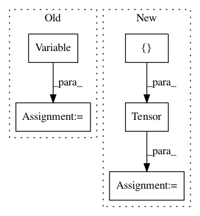

60a342edc8b501802135df44869353cc8604d838,test/lazy/kronecker_product_lazy_variable_test.py,,,#,11
Before Change
x = torch.zeros(2, 11)
x[0] = torch.linspace(0, 1, 11)
x[1] = torch.linspace(0, 0.95, 11)
x = Variable(x.t())
class Model(gpytorch.GridInducingPointModule):
def __init__(self):
After Change
[2, 1],
[1, 2],
])
c = torch.Tensor([
[4, 0, 1, 0],
[0, 1, -1, 0],
[1, -1, 3, 0],
[0, 0, 0, 1],
])
def kron(a, b):
res = []
In pattern: SUPERPATTERN
Frequency: 4
Non-data size: 5
Instances
Project Name: cornellius-gp/gpytorch
Commit Name: 60a342edc8b501802135df44869353cc8604d838
Time: 2018-01-11
Author: gpleiss@gmail.com
File Name: test/lazy/kronecker_product_lazy_variable_test.py
Class Name:
Method Name:
Project Name: cornellius-gp/gpytorch
Commit Name: 74db1a184a17bee6e658851d924c45740888f84a
Time: 2018-06-29
Author: ss3765@cornell.edu
File Name: gpytorch/lazy/constant_mul_lazy_variable.py
Class Name: ConstantMulLazyVariable
Method Name: __init__
Project Name: cornellius-gp/gpytorch
Commit Name: 020d3d6dfa1bbcc13f7f7f0a833f57bb2cc8ef9d
Time: 2018-07-03
Author: balandat@fb.com
File Name: gpytorch/lazy/constant_mul_lazy_variable.py
Class Name: ConstantMulLazyVariable
Method Name: __init__
Project Name: cornellius-gp/gpytorch
Commit Name: 59d4a8b3bea3b5969f79b45456c8e594b617ce92
Time: 2017-11-13
Author: gpleiss@gmail.com
File Name: test/lazy/toeplitz_lazy_variable_test.py
Class Name:
Method Name: